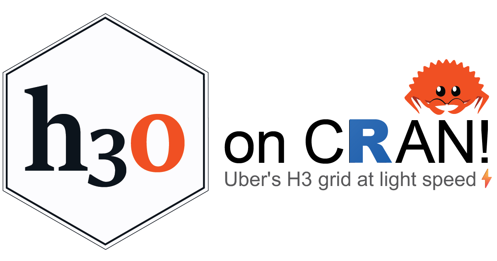
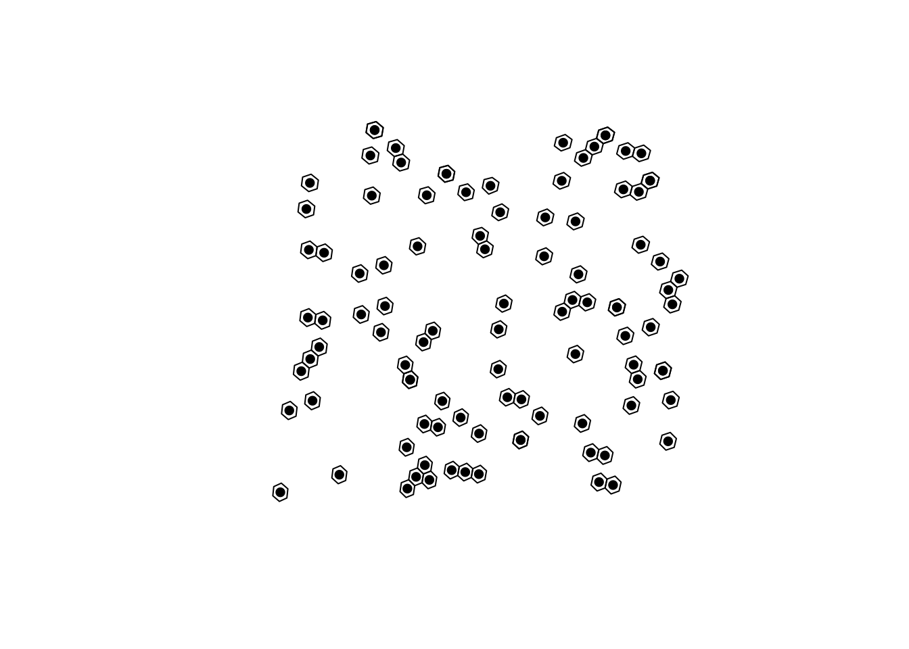

R users now have access to a pure Rust implementation of Uber’s H3, a hexagonal geospatial grid and indexing system.
Authors
Blake Vernon
Josiah Parry
Published
September 9, 2025

The extendr-powered R package h3o provides access to a pure Rust implementation of Uber’s H3 Geospatial Indexing System. Originally developed by Josiah Parry, the R package has also become an official product of extendr, which means community support 🤝 and maintenance 🏗️ into the foreseeable future.
h3o at a glance 👀
The package provides functionality to interact with H3’s grid as vectors, which can be converted to and from sf geometries.
H3 cell centroids can be returned using h3_to_points(). If sf is avilable, the results will be returned as an sfc (sf column) object. Otherwise it will return a list of sfg (sf geometries).
# fetch h3 columnh3s <- h3_cells[["h3"]]# get there centersh3_centers <-h3_to_points(h3s)# plot the hexagons with the centersplot(st_geometry(h3_cells))plot(h3_centers, pch =16, add =TRUE, col ="black")

H3 at light speed ⚡
Because it builds on a pure Rust implementation, h3o is also very very fast. Here are some benchmarks, which also serve to showcase h3o tools.
# get edges for a single locationeds <-h3_edges(h3s[1])[[1]]# strings for h3jsreds_str <-as.character(eds)bench::mark(h3o =h3_edge_cells(eds),h3jsr = h3jsr::get_udends(eds_str),check =FALSE,relative =TRUE)